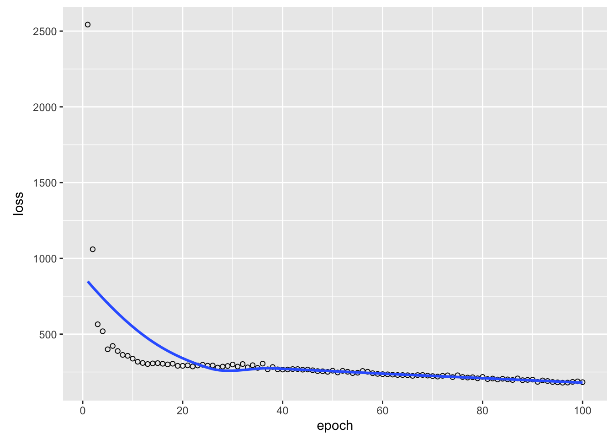

library(keras3)
Attaching package: 'keras3'The following objects are masked from 'package:tensorflow':
set_random_seed, shape# or library(torch)We can use TensorFlow directly from R (see Appendix B for an introduction to TensorFlow), and we could use this knowledge to implement a neural network in TensorFlow directly in R. However, this can be quite cumbersome. For simple problems, it is usually faster to use a higher-level API that helps us implement the machine learning models in TensorFlow. The most common of these is Keras.
Keras is a powerful framework for building and training neural networks with just a few lines of code. As of the end of 2018, Keras and TensorFlow are fully interoperable, allowing us to take advantage of the best of both.
The goal of this lesson is to familiarize you with Keras. If you have TensorFlow installed, you can find Keras inside TensorFlow: tf.keras. However, the RStudio team has built an R package on top of tf.keras that is more convenient to use. To load the Keras package, type
library(keras3)
Attaching package: 'keras3'The following objects are masked from 'package:tensorflow':
set_random_seed, shape# or library(torch)We build a small classifier to predict the three species of the iris data set. Load the necessary packages and data sets:
library(keras3)
library(tensorflow)
library(torch)
Attaching package: 'torch'The following object is masked from 'package:keras3':
as_iteratordata(iris)
head(iris) Sepal.Length Sepal.Width Petal.Length Petal.Width Species
1 5.1 3.5 1.4 0.2 setosa
2 4.9 3.0 1.4 0.2 setosa
3 4.7 3.2 1.3 0.2 setosa
4 4.6 3.1 1.5 0.2 setosa
5 5.0 3.6 1.4 0.2 setosa
6 5.4 3.9 1.7 0.4 setosaFor neural networks, it is beneficial to scale the predictors (scaling = centering and standardization, see ?scale). We also split our data into predictors (X) and response (Y = the three species).
X = scale(iris[,1:4])
Y = iris[,5]Additionally, Keras/TensorFlow cannot handle factors and we have to create contrasts (one-hot encoding). To do so, we have to specify the number of categories. This can be tricky for a beginner, because in other programming languages like Python and C++, arrays start at zero. Thus, when we would specify 3 as number of classes for our three species, we would have the classes 0,1,2,3. Keep this in mind.
Y = keras3::to_categorical(as.integer(Y) - 1L, 3)
head(Y) # 3 columns, one for each level of the response. [,1] [,2] [,3]
[1,] 1 0 0
[2,] 1 0 0
[3,] 1 0 0
[4,] 1 0 0
[5,] 1 0 0
[6,] 1 0 0After having prepared the data, we start now with the typical workflow in keras.
1. Initialize a sequential model in Keras:
model = keras_model_sequential(shape = list(4L))Torch users can skip this step.
A sequential Keras model is a higher order type of model within Keras and consists of one input and one output model.
2. Add hidden layers to the model (we will learn more about hidden layers during the next days).
When specifying the hidden layers, we also have to specify the shape and a so called activation function. You can think of the activation function as decision for what is forwarded to the next neuron (but we will learn more about it later). If you want to know this topic in even more depth, consider watching the videos presented in section @ref(basicMath).
The shape of the input is the number of predictors (here 4) and the shape of the output is the number of classes (here 3).
model %>%
layer_dense(units = 20L, activation = "relu") %>%
layer_dense(units = 20L) %>%
layer_dense(units = 20L) %>%
layer_dense(units = 3L, activation = "softmax") The Torch syntax is very similar, we will give a list of layers to the “nn_sequential” function. Here, we have to specify the softmax activation function as an extra layer:
model_torch =
nn_sequential(
nn_linear(4L, 20L),
nn_linear(20L, 20L),
nn_linear(20L, 20L),
nn_linear(20L, 3L),
nn_softmax(2)
)3. Compile the model with a loss function (here: cross entropy) and an optimizer (here: Adamax).
We will learn about other options later, so for now, do not worry about the “learning_rate” (“lr” in Torch or earlier in TensorFlow) argument, cross entropy or the optimizer.
model %>%
compile(loss = keras3::loss_categorical_crossentropy,
keras3::optimizer_adamax(learning_rate = 0.001))
summary(model)Model: "sequential"
┏━━━━━━━━━━━━━━━━━━━━━━━━━━━━━━━━━━━┳━━━━━━━━━━━━━━━━━━━━━━━━━━┳━━━━━━━━━━━━━━━┓
┃ Layer (type) ┃ Output Shape ┃ Param # ┃
┡━━━━━━━━━━━━━━━━━━━━━━━━━━━━━━━━━━━╇━━━━━━━━━━━━━━━━━━━━━━━━━━╇━━━━━━━━━━━━━━━┩
│ dense (Dense) │ (None, 20) │ 100 │
├───────────────────────────────────┼──────────────────────────┼───────────────┤
│ dense_1 (Dense) │ (None, 20) │ 420 │
├───────────────────────────────────┼──────────────────────────┼───────────────┤
│ dense_2 (Dense) │ (None, 20) │ 420 │
├───────────────────────────────────┼──────────────────────────┼───────────────┤
│ dense_3 (Dense) │ (None, 3) │ 63 │
└───────────────────────────────────┴──────────────────────────┴───────────────┘
Total params: 1,003 (3.92 KB)
Trainable params: 1,003 (3.92 KB)
Non-trainable params: 0 (0.00 B)plot(model)Specify optimizer and the parameters which will be trained (in our case the parameters of the network):
optimizer_torch = optim_adam(params = model_torch$parameters, lr = 0.001)4. Fit model in 30 iterations (epochs)
library(tensorflow)
library(keras3)
model_history =
model %>%
fit(x = X, y = apply(Y, 2, as.integer), epochs = 30L,
batch_size = 20L, shuffle = TRUE)Epoch 1/30
8/8 - 0s - 47ms/step - loss: 1.0447
Epoch 2/30
8/8 - 0s - 2ms/step - loss: 0.9408
Epoch 3/30
8/8 - 0s - 2ms/step - loss: 0.8691
Epoch 4/30
8/8 - 0s - 1ms/step - loss: 0.8117
Epoch 5/30
8/8 - 0s - 2ms/step - loss: 0.7609
Epoch 6/30
8/8 - 0s - 2ms/step - loss: 0.7158
Epoch 7/30
8/8 - 0s - 2ms/step - loss: 0.6736
Epoch 8/30
8/8 - 0s - 2ms/step - loss: 0.6337
Epoch 9/30
8/8 - 0s - 1ms/step - loss: 0.5968
Epoch 10/30
8/8 - 0s - 1ms/step - loss: 0.5618
Epoch 11/30
8/8 - 0s - 2ms/step - loss: 0.5282
Epoch 12/30
8/8 - 0s - 1ms/step - loss: 0.4988
Epoch 13/30
8/8 - 0s - 1ms/step - loss: 0.4702
Epoch 14/30
8/8 - 0s - 1ms/step - loss: 0.4445
Epoch 15/30
8/8 - 0s - 1ms/step - loss: 0.4214
Epoch 16/30
8/8 - 0s - 1ms/step - loss: 0.4011
Epoch 17/30
8/8 - 0s - 1ms/step - loss: 0.3823
Epoch 18/30
8/8 - 0s - 1ms/step - loss: 0.3650
Epoch 19/30
8/8 - 0s - 1ms/step - loss: 0.3510
Epoch 20/30
8/8 - 0s - 1ms/step - loss: 0.3362
Epoch 21/30
8/8 - 0s - 1ms/step - loss: 0.3243
Epoch 22/30
8/8 - 0s - 1ms/step - loss: 0.3129
Epoch 23/30
8/8 - 0s - 1ms/step - loss: 0.3023
Epoch 24/30
8/8 - 0s - 1ms/step - loss: 0.2933
Epoch 25/30
8/8 - 0s - 1ms/step - loss: 0.2847
Epoch 26/30
8/8 - 0s - 1ms/step - loss: 0.2772
Epoch 27/30
8/8 - 0s - 1ms/step - loss: 0.2693
Epoch 28/30
8/8 - 0s - 1ms/step - loss: 0.2637
Epoch 29/30
8/8 - 0s - 1ms/step - loss: 0.2561
Epoch 30/30
8/8 - 0s - 1ms/step - loss: 0.2507In Torch, we jump directly to the training loop, however, here we have to write our own training loop:
library(torch)
torch_manual_seed(321L)
set.seed(123)
# Calculate number of training steps.
epochs = 30
batch_size = 20
steps = round(nrow(X)/batch_size * epochs)
X_torch = torch_tensor(X)
Y_torch = torch_tensor(apply(Y, 1, which.max))
# Set model into training status.
model_torch$train()
log_losses = NULL
# Training loop.
for(i in 1:steps){
# Get batch.
indices = sample.int(nrow(X), batch_size)
# Reset backpropagation.
optimizer_torch$zero_grad()
# Predict and calculate loss.
pred = model_torch(X_torch[indices, ])
loss = nnf_cross_entropy(pred, Y_torch[indices])
# Backpropagation and weight update.
loss$backward()
optimizer_torch$step()
log_losses[i] = as.numeric(loss)
}5. Plot training history:
plot(model_history)
plot(log_losses, xlab = "steps", ylab = "loss", las = 1)
6. Create predictions:
predictions = predict(model, X) # Probabilities for each class.5/5 - 0s - 8ms/stepGet probabilities:
head(predictions) # Quasi-probabilities for each species. [,1] [,2] [,3]
[1,] 0.9785197 0.01818801 0.003292309
[2,] 0.8986255 0.09639474 0.004979803
[3,] 0.9667021 0.03032060 0.002977205
[4,] 0.9528620 0.04362591 0.003512136
[5,] 0.9865819 0.01135019 0.002067903
[6,] 0.9876466 0.01026324 0.002090219For each plant, we want to know for which species we got the highest probability:
preds = apply(predictions, 1, which.max)
print(preds) [1] 1 1 1 1 1 1 1 1 1 1 1 1 1 1 1 1 1 1 1 1 1 1 1 1 1 1 1 1 1 1 1 1 1 1 1 1 1
[38] 1 1 1 1 2 1 1 1 1 1 1 1 1 3 3 3 2 2 2 3 2 2 2 2 2 2 2 2 2 2 2 2 2 3 2 2 2
[75] 2 2 2 3 2 2 2 2 2 3 2 3 3 2 2 2 2 2 2 2 2 2 2 2 2 2 3 3 3 3 3 3 2 3 3 3 3
[112] 3 3 3 3 3 3 3 3 2 3 3 3 3 3 3 3 3 3 3 3 3 3 3 2 3 3 3 3 3 3 3 3 3 3 3 3 3
[149] 3 3model_torch$eval()
preds_torch = model_torch(torch_tensor(X))
preds_torch = apply(preds_torch, 1, which.max)
print(preds_torch) [1] 1 1 1 1 1 1 1 1 1 1 1 1 1 1 1 1 1 1 1 1 1 1 1 1 1 1 1 1 1 1 1 1 1 1 1 1 1
[38] 1 1 1 1 1 1 1 1 1 1 1 1 1 2 2 2 2 2 2 2 2 2 2 2 2 2 2 2 2 2 2 2 2 3 2 2 2
[75] 2 2 2 3 2 2 2 2 2 3 2 2 2 2 2 2 2 2 2 2 2 2 2 2 2 2 3 3 3 3 3 3 3 3 3 3 3
[112] 3 3 3 3 3 3 3 3 3 3 3 3 3 3 3 3 3 3 3 3 3 3 2 2 3 3 3 3 3 3 3 3 3 3 3 3 3
[149] 3 37. Calculate Accuracy (how often we have been correct):
mean(preds == as.integer(iris$Species))[1] 0.9133333mean(preds_torch == as.integer(iris$Species))[1] 0.96666678. Plot predictions, to see if we have done a good job:
oldpar = par(mfrow = c(1, 2))
plot(iris$Sepal.Length, iris$Petal.Length, col = iris$Species,
main = "Observed")
plot(iris$Sepal.Length, iris$Petal.Length, col = preds,
main = "Predicted")
par(oldpar) # Reset par.So you see, building a neural network is very easy with Keras or Torch and you can already do it on your own.
We now build a regression for the airquality data set with Keras/Torch. We want to predict the variable “Ozone” (continuous).
Tasks:
Before we start, load and prepare the data set:
library(tensorflow)
library(keras3)
data = airquality
summary(data) Ozone Solar.R Wind Temp
Min. : 1.00 Min. : 7.0 Min. : 1.700 Min. :56.00
1st Qu.: 18.00 1st Qu.:115.8 1st Qu.: 7.400 1st Qu.:72.00
Median : 31.50 Median :205.0 Median : 9.700 Median :79.00
Mean : 42.13 Mean :185.9 Mean : 9.958 Mean :77.88
3rd Qu.: 63.25 3rd Qu.:258.8 3rd Qu.:11.500 3rd Qu.:85.00
Max. :168.00 Max. :334.0 Max. :20.700 Max. :97.00
NA's :37 NA's :7
Month Day
Min. :5.000 Min. : 1.0
1st Qu.:6.000 1st Qu.: 8.0
Median :7.000 Median :16.0
Mean :6.993 Mean :15.8
3rd Qu.:8.000 3rd Qu.:23.0
Max. :9.000 Max. :31.0
data = data[complete.cases(data),] # Remove NAs.
summary(data) Ozone Solar.R Wind Temp
Min. : 1.0 Min. : 7.0 Min. : 2.30 Min. :57.00
1st Qu.: 18.0 1st Qu.:113.5 1st Qu.: 7.40 1st Qu.:71.00
Median : 31.0 Median :207.0 Median : 9.70 Median :79.00
Mean : 42.1 Mean :184.8 Mean : 9.94 Mean :77.79
3rd Qu.: 62.0 3rd Qu.:255.5 3rd Qu.:11.50 3rd Qu.:84.50
Max. :168.0 Max. :334.0 Max. :20.70 Max. :97.00
Month Day
Min. :5.000 Min. : 1.00
1st Qu.:6.000 1st Qu.: 9.00
Median :7.000 Median :16.00
Mean :7.216 Mean :15.95
3rd Qu.:9.000 3rd Qu.:22.50
Max. :9.000 Max. :31.00 x = scale(data[,2:6])
y = data[,1]library(tensorflow)
library(keras3)
model = keras_model_sequential()model %>%
layer_dense(units = 20L, activation = "relu", input_shape = list(5L)) %>%
....
layer_dense(units = 1L, activation = "linear")model %>%
layer_dense(units = 20L, activation = "relu", input_shape = list(5L)) %>%
layer_dense(units = 20L) %>%
layer_dense(units = 20L) %>%
layer_dense(units = 1L, activation = "linear")model %>%
compile(loss = keras3::loss_mean_squared_error, optimizer_adamax(learning_rate = 0.05))What is the “mean_squared_error” loss?
model_history =
model %>%
fit(x = x, y = as.numeric(y), epochs = 100L,
batch_size = 20L, shuffle = TRUE)Epoch 1/100
6/6 - 0s - 52ms/step - loss: 2180.2065
Epoch 2/100
6/6 - 0s - 2ms/step - loss: 658.5392
Epoch 3/100
6/6 - 0s - 2ms/step - loss: 441.5439
Epoch 4/100
6/6 - 0s - 2ms/step - loss: 395.8959
Epoch 5/100
6/6 - 0s - 2ms/step - loss: 389.8369
Epoch 6/100
6/6 - 0s - 2ms/step - loss: 325.4288
Epoch 7/100
6/6 - 0s - 2ms/step - loss: 350.6530
Epoch 8/100
6/6 - 0s - 2ms/step - loss: 333.5124
Epoch 9/100
6/6 - 0s - 2ms/step - loss: 302.5811
Epoch 10/100
6/6 - 0s - 2ms/step - loss: 305.4561
Epoch 11/100
6/6 - 0s - 2ms/step - loss: 287.5186
Epoch 12/100
6/6 - 0s - 2ms/step - loss: 292.2892
Epoch 13/100
6/6 - 0s - 2ms/step - loss: 277.1974
Epoch 14/100
6/6 - 0s - 2ms/step - loss: 279.3144
Epoch 15/100
6/6 - 0s - 2ms/step - loss: 275.2715
Epoch 16/100
6/6 - 0s - 2ms/step - loss: 275.5526
Epoch 17/100
6/6 - 0s - 2ms/step - loss: 270.5567
Epoch 18/100
6/6 - 0s - 2ms/step - loss: 265.6364
Epoch 19/100
6/6 - 0s - 2ms/step - loss: 261.0817
Epoch 20/100
6/6 - 0s - 2ms/step - loss: 254.6495
Epoch 21/100
6/6 - 0s - 2ms/step - loss: 253.9101
Epoch 22/100
6/6 - 0s - 2ms/step - loss: 246.7764
Epoch 23/100
6/6 - 0s - 2ms/step - loss: 248.8281
Epoch 24/100
6/6 - 0s - 2ms/step - loss: 251.6508
Epoch 25/100
6/6 - 0s - 2ms/step - loss: 234.7372
Epoch 26/100
6/6 - 0s - 2ms/step - loss: 225.4843
Epoch 27/100
6/6 - 0s - 2ms/step - loss: 240.0434
Epoch 28/100
6/6 - 0s - 2ms/step - loss: 231.4203
Epoch 29/100
6/6 - 0s - 2ms/step - loss: 241.6734
Epoch 30/100
6/6 - 0s - 2ms/step - loss: 226.3379
Epoch 31/100
6/6 - 0s - 2ms/step - loss: 208.2628
Epoch 32/100
6/6 - 0s - 2ms/step - loss: 213.9029
Epoch 33/100
6/6 - 0s - 2ms/step - loss: 205.4076
Epoch 34/100
6/6 - 0s - 2ms/step - loss: 217.8089
Epoch 35/100
6/6 - 0s - 2ms/step - loss: 216.9313
Epoch 36/100
6/6 - 0s - 2ms/step - loss: 211.3665
Epoch 37/100
6/6 - 0s - 2ms/step - loss: 202.8973
Epoch 38/100
6/6 - 0s - 2ms/step - loss: 196.9705
Epoch 39/100
6/6 - 0s - 2ms/step - loss: 196.1686
Epoch 40/100
6/6 - 0s - 2ms/step - loss: 187.7153
Epoch 41/100
6/6 - 0s - 2ms/step - loss: 204.1343
Epoch 42/100
6/6 - 0s - 2ms/step - loss: 189.9187
Epoch 43/100
6/6 - 0s - 2ms/step - loss: 186.4032
Epoch 44/100
6/6 - 0s - 2ms/step - loss: 186.5886
Epoch 45/100
6/6 - 0s - 2ms/step - loss: 179.0818
Epoch 46/100
6/6 - 0s - 2ms/step - loss: 177.3384
Epoch 47/100
6/6 - 0s - 2ms/step - loss: 181.3275
Epoch 48/100
6/6 - 0s - 2ms/step - loss: 187.0575
Epoch 49/100
6/6 - 0s - 2ms/step - loss: 183.4613
Epoch 50/100
6/6 - 0s - 2ms/step - loss: 176.2195
Epoch 51/100
6/6 - 0s - 2ms/step - loss: 189.7436
Epoch 52/100
6/6 - 0s - 2ms/step - loss: 180.3166
Epoch 53/100
6/6 - 0s - 2ms/step - loss: 217.9000
Epoch 54/100
6/6 - 0s - 2ms/step - loss: 220.1817
Epoch 55/100
6/6 - 0s - 2ms/step - loss: 221.4899
Epoch 56/100
6/6 - 0s - 2ms/step - loss: 199.3351
Epoch 57/100
6/6 - 0s - 2ms/step - loss: 198.3678
Epoch 58/100
6/6 - 0s - 2ms/step - loss: 173.7022
Epoch 59/100
6/6 - 0s - 2ms/step - loss: 180.9065
Epoch 60/100
6/6 - 0s - 2ms/step - loss: 160.5930
Epoch 61/100
6/6 - 0s - 2ms/step - loss: 156.4673
Epoch 62/100
6/6 - 0s - 2ms/step - loss: 170.5153
Epoch 63/100
6/6 - 0s - 2ms/step - loss: 156.9003
Epoch 64/100
6/6 - 0s - 2ms/step - loss: 156.2744
Epoch 65/100
6/6 - 0s - 2ms/step - loss: 153.4808
Epoch 66/100
6/6 - 0s - 2ms/step - loss: 165.0957
Epoch 67/100
6/6 - 0s - 2ms/step - loss: 160.4424
Epoch 68/100
6/6 - 0s - 2ms/step - loss: 177.0683
Epoch 69/100
6/6 - 0s - 2ms/step - loss: 165.1798
Epoch 70/100
6/6 - 0s - 2ms/step - loss: 157.8712
Epoch 71/100
6/6 - 0s - 2ms/step - loss: 149.2635
Epoch 72/100
6/6 - 0s - 2ms/step - loss: 137.9191
Epoch 73/100
6/6 - 0s - 2ms/step - loss: 138.8927
Epoch 74/100
6/6 - 0s - 2ms/step - loss: 144.3302
Epoch 75/100
6/6 - 0s - 2ms/step - loss: 139.6652
Epoch 76/100
6/6 - 0s - 2ms/step - loss: 162.0681
Epoch 77/100
6/6 - 0s - 2ms/step - loss: 143.8048
Epoch 78/100
6/6 - 0s - 2ms/step - loss: 137.0528
Epoch 79/100
6/6 - 0s - 2ms/step - loss: 151.2452
Epoch 80/100
6/6 - 0s - 2ms/step - loss: 143.4086
Epoch 81/100
6/6 - 0s - 2ms/step - loss: 146.6025
Epoch 82/100
6/6 - 0s - 2ms/step - loss: 144.9123
Epoch 83/100
6/6 - 0s - 2ms/step - loss: 143.2294
Epoch 84/100
6/6 - 0s - 2ms/step - loss: 135.6099
Epoch 85/100
6/6 - 0s - 2ms/step - loss: 143.7205
Epoch 86/100
6/6 - 0s - 2ms/step - loss: 126.2857
Epoch 87/100
6/6 - 0s - 2ms/step - loss: 142.8436
Epoch 88/100
6/6 - 0s - 2ms/step - loss: 154.3711
Epoch 89/100
6/6 - 0s - 2ms/step - loss: 144.7837
Epoch 90/100
6/6 - 0s - 2ms/step - loss: 132.8086
Epoch 91/100
6/6 - 0s - 2ms/step - loss: 120.5978
Epoch 92/100
6/6 - 0s - 2ms/step - loss: 121.4098
Epoch 93/100
6/6 - 0s - 2ms/step - loss: 136.6878
Epoch 94/100
6/6 - 0s - 2ms/step - loss: 153.0520
Epoch 95/100
6/6 - 0s - 2ms/step - loss: 121.0162
Epoch 96/100
6/6 - 0s - 2ms/step - loss: 130.7379
Epoch 97/100
6/6 - 0s - 2ms/step - loss: 127.7132
Epoch 98/100
6/6 - 0s - 2ms/step - loss: 151.4559
Epoch 99/100
6/6 - 0s - 2ms/step - loss: 140.0195
Epoch 100/100
6/6 - 0s - 2ms/step - loss: 142.7797plot(model_history)
pred_keras = predict(model, x)4/4 - 0s - 9ms/stepfit = lm(Ozone ~ ., data = data)
pred_lm = predict(fit, data)
rmse_lm = mean(sqrt((y - pred_lm)^2))
rmse_keras = mean(sqrt((y - pred_keras)^2))
print(rmse_lm)[1] 14.78897print(rmse_keras)[1] 8.559584Before we start, load and prepare the data set:
library(torch)
data = airquality
summary(data) Ozone Solar.R Wind Temp
Min. : 1.00 Min. : 7.0 Min. : 1.700 Min. :56.00
1st Qu.: 18.00 1st Qu.:115.8 1st Qu.: 7.400 1st Qu.:72.00
Median : 31.50 Median :205.0 Median : 9.700 Median :79.00
Mean : 42.13 Mean :185.9 Mean : 9.958 Mean :77.88
3rd Qu.: 63.25 3rd Qu.:258.8 3rd Qu.:11.500 3rd Qu.:85.00
Max. :168.00 Max. :334.0 Max. :20.700 Max. :97.00
NA's :37 NA's :7
Month Day
Min. :5.000 Min. : 1.0
1st Qu.:6.000 1st Qu.: 8.0
Median :7.000 Median :16.0
Mean :6.993 Mean :15.8
3rd Qu.:8.000 3rd Qu.:23.0
Max. :9.000 Max. :31.0
plot(data)
data = data[complete.cases(data),] # Remove NAs.
summary(data) Ozone Solar.R Wind Temp
Min. : 1.0 Min. : 7.0 Min. : 2.30 Min. :57.00
1st Qu.: 18.0 1st Qu.:113.5 1st Qu.: 7.40 1st Qu.:71.00
Median : 31.0 Median :207.0 Median : 9.70 Median :79.00
Mean : 42.1 Mean :184.8 Mean : 9.94 Mean :77.79
3rd Qu.: 62.0 3rd Qu.:255.5 3rd Qu.:11.50 3rd Qu.:84.50
Max. :168.0 Max. :334.0 Max. :20.70 Max. :97.00
Month Day
Min. :5.000 Min. : 1.00
1st Qu.:6.000 1st Qu.: 9.00
Median :7.000 Median :16.00
Mean :7.216 Mean :15.95
3rd Qu.:9.000 3rd Qu.:22.50
Max. :9.000 Max. :31.00 x = scale(data[,2:6])
y = data[,1]model_torch =
nn_sequential(
nn_linear(5L, 20L),
...
nn_linear(20L, 1L),
)library(torch)
model_torch =
nn_sequential(
nn_linear(5L, 20L),
nn_relu(),
nn_linear(20L, 20L),
nn_relu(),
nn_linear(20L, 20L),
nn_relu(),
nn_linear(20L, 1L),
)We have to pass the network’s parameters to the optimizer (how is this different to keras?)
optimizer_torch = optim_adam(params = model_torch$parameters, lr = 0.05)In torch we write the trainings loop on our own. Complete the trainings loop:
# Calculate number of training steps.
epochs = ...
batch_size = 32
steps = ...
X_torch = torch_tensor(x)
Y_torch = torch_tensor(y, ...)
# Set model into training status.
model_torch$train()
log_losses = NULL
# Training loop.
for(i in 1:steps){
# Get batch indices.
indices = sample.int(nrow(x), batch_size)
X_batch = ...
Y_batch = ...
# Reset backpropagation.
optimizer_torch$zero_grad()
# Predict and calculate loss.
pred = model_torch(X_batch)
loss = ...
# Backpropagation and weight update.
loss$backward()
optimizer_torch$step()
log_losses[i] = as.numeric(loss)
}# Calculate number of training steps.
epochs = 100
batch_size = 32
steps = round(nrow(x)/batch_size*epochs)
X_torch = torch_tensor(x)
Y_torch = torch_tensor(y, dtype = torch_float32())$view(list(-1, 1))
# Set model into training status.
model_torch$train()
log_losses = NULL
# Training loop.
for(i in 1:steps){
# Get batch indices.
indices = sample.int(nrow(x), batch_size)
X_batch = X_torch[indices,]
Y_batch = Y_torch[indices,]
# Reset backpropagation.
optimizer_torch$zero_grad()
# Predict and calculate loss.
pred = model_torch(X_batch)
loss = nnf_mse_loss(pred, Y_batch)
# Backpropagation and weight update.
loss$backward()
optimizer_torch$step()
log_losses[i] = as.numeric(loss)
}Tips:
plot(y = log_losses, x = 1:steps, xlab = "Epoch", ylab = "MSE")
pred_torch = model_torch(X_torch)
pred_torch = as.numeric(pred_torch) # cast torch to R object fit = lm(Ozone ~ ., data = data)
pred_lm = predict(fit, data)
rmse_lm = mean(sqrt((y - pred_lm)^2))
rmse_torch = mean(sqrt((y - pred_torch)^2))
print(rmse_lm)[1] 14.78897print(rmse_torch)[1] 6.897064Build a Keras DNN for the titanic dataset
The next task differs for Torch and Keras users. Keras users will learn more about the inner working of training while Torch users will learn how to simplify and generalize the training loop.
Go through the code and try to understand it.
Similar to Torch, here we will write the training loop ourselves in the following. The training loop consists of several steps:
library(tensorflow)
library(keras3)
data = airquality
data = data[complete.cases(data),] # Remove NAs.
x = scale(data[,2:6])
y = data[,1]
layers = tf$keras$layers
model = tf$keras$models$Sequential(
c(
layers$InputLayer(input_shape = list(5L)),
layers$Dense(units = 20L, activation = tf$nn$relu),
layers$Dense(units = 20L, activation = tf$nn$relu),
layers$Dense(units = 20L, activation = tf$nn$relu),
layers$Dense(units = 1L, activation = NULL) # No activation == "linear".
)
)
epochs = 200L
optimizer = tf$keras$optimizers$Adamax(0.01)
# Stochastic gradient optimization is more efficient
# in each optimization step, we use a random subset of the data.
get_batch = function(batch_size = 32L){
indices = sample.int(nrow(x), size = batch_size)
return(list(bX = x[indices,], bY = y[indices]))
}
get_batch() # Try out this function.$bX
Solar.R Wind Temp Month Day
66 -0.10753214 -1.50086285 0.54640337 -0.1467431 -1.257115152
29 0.73720791 1.39425525 0.33653910 -1.5041165 1.499226218
8 -0.94130153 1.08506788 -1.97196786 -1.5041165 -0.912572481
122 0.57264816 -1.02302783 1.91052111 0.5319436 1.614073775
71 -0.10753214 -0.71384046 1.17599617 -0.1467431 -0.682877366
17 1.34059366 0.57912491 -1.23744292 -1.5041165 0.121055533
113 0.81400246 1.56290291 -0.08318944 0.5319436 0.580445762
117 0.58361881 -1.83815816 0.33653910 0.5319436 1.039835990
139 0.57264816 -0.85438017 0.02174269 1.2106304 0.006207976
92 0.75914921 -0.20789749 0.33653910 -0.1467431 1.728921332
79 1.09923936 -1.02302783 0.65133550 -0.1467431 0.235903090
142 0.58361881 0.10128988 -1.02757865 1.2106304 0.350750647
143 0.17770476 -0.54519280 0.44147123 1.2106304 0.465598204
136 0.58361881 -1.02302783 -0.08318944 1.2106304 -0.338334695
3 -0.39276904 0.74777257 -0.39798584 -1.5041165 -1.486810266
40 1.16506326 1.08506788 1.28092831 -0.8254298 -0.797724924
41 1.51612406 0.43858520 0.96613190 -0.8254298 -0.682877366
140 0.43002971 1.08506788 -1.13251078 1.2106304 0.121055533
31 1.03341546 -0.71384046 -0.18812157 -1.5041165 1.728921332
1 0.05702761 -0.71384046 -1.13251078 -1.5041165 -1.716505380
88 -1.12780258 0.57912491 0.86119977 -0.1467431 1.269531104
70 0.95662091 -1.19167548 1.49079258 -0.1467431 -0.797724924
82 -1.95060133 -0.85438017 -0.39798584 -0.1467431 0.580445762
20 -1.54468728 -0.06735777 -1.65717146 -1.5041165 0.465598204
149 0.08993956 -0.85438017 -0.81771438 1.2106304 1.154683547
12 0.78109051 -0.06735777 -0.92264652 -1.5041165 -0.453182252
116 0.29838191 -0.06735777 0.12667483 0.5319436 0.924988433
16 1.63680121 0.43858520 -1.44730719 -1.5041165 0.006207976
81 0.38614711 0.43858520 0.75626764 -0.1467431 0.465598204
68 1.00050351 -1.36032314 1.07106404 -0.1467431 -1.027420038
74 -0.10753214 1.39425525 0.33653910 -0.1467431 -0.338334695
137 -1.76410028 0.26993754 -0.71278225 1.2106304 -0.223487138
$bY
[1] 64 45 19 84 85 34 21 168 46 59 61 24 16 28 12 71 39 18 37
[20] 41 52 97 16 11 30 16 45 14 63 77 27 9steps = floor(nrow(x)/32) * epochs # We need nrow(x)/32 steps for each epoch.
for(i in 1:steps){
# Get data.
batch = get_batch()
# Transform it into tensors.
bX = tf$constant(batch$bX)
bY = tf$constant(matrix(batch$bY, ncol = 1L))
# Automatic differentiation:
# Record computations with respect to our model variables.
with(tf$GradientTape() %as% tape,
{
pred = model(bX) # We record the operation for our model weights.
loss = tf$reduce_mean(tf$keras$losses$mse(bY, pred))
}
)
# Calculate the gradients for our model$weights at the loss / backpropagation.
gradients = tape$gradient(loss, model$weights)
# Update our model weights with the learning rate specified above.
optimizer$apply_gradients(purrr::transpose(list(gradients, model$weights)))
if(! i%%30){
cat("Loss: ", loss$numpy(), "\n") # Print loss every 30 steps (not epochs!).
}
}Loss: 1958.77
Loss: 589.4847
Loss: 245.0694
Loss: 442.4412
Loss: 268.1656
Loss: 286.692
Loss: 481.3918
Loss: 236.6662
Loss: 186.3064
Loss: 234.9965
Loss: 233.4887
Loss: 269.0461
Loss: 305.4433
Loss: 218.0618
Loss: 122.8811
Loss: 248.4597
Loss: 228.1727
Loss: 188.3361
Loss: 384.6655
Loss: 341.113 Keras and Torch use dataloaders to generate the data batches. Dataloaders are objects that return batches of data infinetly. Keras create the dataloader object automatically in the fit function, in Torch we have to write them ourselves:
library(torch)
data = airquality
data = data[complete.cases(data),] # Remove NAs.
x = scale(data[,2:6])
y = matrix(data[,1], ncol = 1L)
torch_dataset = torch::dataset(
name = "airquality",
initialize = function(X,Y) {
self$X = torch::torch_tensor(as.matrix(X), dtype = torch_float32())
self$Y = torch::torch_tensor(as.matrix(Y), dtype = torch_float32())
},
.getitem = function(index) {
x = self$X[index,]
y = self$Y[index,]
list(x, y)
},
.length = function() {
self$Y$size()[[1]]
}
)
dataset = torch_dataset(x,y)
dataloader = torch::dataloader(dataset, batch_size = 30L, shuffle = TRUE)Our dataloader is again an object which has to be initiated. The initiated object returns a list of two elements, batch x and batch y. The initated object stops returning batches when the dataset was completly transversed (no worries, we don’t have to all of this ourselves).
Our training loop has changed:
model_torch = nn_sequential(
nn_linear(5L, 50L),
nn_relu(),
nn_linear(50L, 50L),
nn_relu(),
nn_linear(50L, 50L),
nn_relu(),
nn_linear(50L, 1L)
)
epochs = 50L
opt = optim_adam(model_torch$parameters, 0.01)
train_losses = c()
for(epoch in 1:epochs){
train_loss = c()
coro::loop(
for(batch in dataloader) {
opt$zero_grad()
pred = model_torch(batch[[1]])
loss = nnf_mse_loss(pred, batch[[2]])
loss$backward()
opt$step()
train_loss = c(train_loss, loss$item())
}
)
train_losses = c(train_losses, mean(train_loss))
if(!epoch%%10) cat(sprintf("Loss at epoch %d: %3f\n", epoch, mean(train_loss)))
}Loss at epoch 10: 349.544273
Loss at epoch 20: 289.687613
Loss at epoch 30: 269.088741
Loss at epoch 40: 260.377857
Loss at epoch 50: 213.073002plot(train_losses, type = "o", pch = 15,
col = "darkblue", lty = 1, xlab = "Epoch",
ylab = "Loss", las = 1)Now change the code from above for the iris data set. Tip: In tf\(keras\)losses$… you can find various loss functions.
library(tensorflow)
library(keras3)
x = scale(iris[,1:4])
y = iris[,5]
y = keras3::to_categorical(as.integer(Y)-1L, 3)
layers = tf$keras$layers
model = tf$keras$models$Sequential(
c(
layers$InputLayer(input_shape = list(4L)),
layers$Dense(units = 20L, activation = tf$nn$relu),
layers$Dense(units = 20L, activation = tf$nn$relu),
layers$Dense(units = 20L, activation = tf$nn$relu),
layers$Dense(units = 3L, activation = tf$nn$softmax)
)
)
epochs = 200L
optimizer = tf$keras$optimizers$Adamax(0.01)
# Stochastic gradient optimization is more efficient.
get_batch = function(batch_size = 32L){
indices = sample.int(nrow(x), size = batch_size)
return(list(bX = x[indices,], bY = y[indices,]))
}
steps = floor(nrow(x)/32) * epochs # We need nrow(x)/32 steps for each epoch.
for(i in 1:steps){
batch = get_batch()
bX = tf$constant(batch$bX)
bY = tf$constant(batch$bY)
# Automatic differentiation.
with(tf$GradientTape() %as% tape,
{
pred = model(bX) # we record the operation for our model weights
loss = tf$reduce_mean(tf$keras$losses$categorical_crossentropy(bY, pred))
}
)
# Calculate the gradients for the loss at our model$weights / backpropagation.
gradients = tape$gradient(loss, model$weights)
# Update our model weights with the learning rate specified above.
optimizer$apply_gradients(purrr::transpose(list(gradients, model$weights)))
if(! i%%30){
cat("Loss: ", loss$numpy(), "\n") # Print loss every 30 steps (not epochs!).
}
}Loss: 0.003183122
Loss: 0.0003109011
Loss: 0.000227416
Loss: 0.0001613026
Loss: 0.0004785705
Loss: 0.0001987305
Loss: 0.0001044296
Loss: 0.0001550826
Loss: 0.0001633356
Loss: 0.0001217917
Loss: 0.0001335355
Loss: 9.454731e-05
Loss: 9.568449e-05
Loss: 7.736589e-05
Loss: 6.429897e-05
Loss: 4.358912e-05
Loss: 4.031057e-05
Loss: 4.274344e-05
Loss: 7.937835e-05
Loss: 3.645371e-05
Loss: 4.430519e-05
Loss: 6.454246e-05
Loss: 2.521203e-05
Loss: 6.15663e-05
Loss: 4.310792e-05
Loss: 2.853222e-05 library(torch)
x = scale(iris[,1:4])
y = iris[,5]
y = as.integer(iris$Species)
torch_dataset = torch::dataset(
name = "iris",
initialize = function(X,Y) {
self$X = torch::torch_tensor(as.matrix(X), dtype = torch_float32())
self$Y = torch::torch_tensor(Y, dtype = torch_long())
},
.getitem = function(index) {
x = self$X[index,]
y = self$Y[index]
list(x, y)
},
.length = function() {
self$Y$size()[[1]]
}
)
dataset = torch_dataset(x,y)
dataloader = torch::dataloader(dataset, batch_size = 30L, shuffle = TRUE)
model_torch = nn_sequential(
nn_linear(4L, 50L),
nn_relu(),
nn_linear(50L, 50L),
nn_relu(),
nn_linear(50L, 50L),
nn_relu(),
nn_linear(50L, 3L)
)
epochs = 50L
opt = optim_adam(model_torch$parameters, 0.01)
train_losses = c()
for(epoch in 1:epochs){
train_loss
coro::loop(
for(batch in dataloader) {
opt$zero_grad()
pred = model_torch(batch[[1]])
loss = nnf_cross_entropy(pred, batch[[2]])
loss$backward()
opt$step()
train_loss = c(train_loss, loss$item())
}
)
train_losses = c(train_losses, mean(train_loss))
if(!epoch%%10) cat(sprintf("Loss at epoch %d: %3f\n", epoch, mean(train_loss)))
}Loss at epoch 10: 15.999315
Loss at epoch 20: 8.324385
Loss at epoch 30: 5.632413
Loss at epoch 40: 4.256267
Loss at epoch 50: 3.425689Remarks:
If are not yet familiar with the underlying concepts of neural networks and want to know more about that, it is suggested to read / view the following videos / sites. Consider the Links and videos with descriptions in parentheses as optional bonus.
This might be useful to understand the further concepts in more depth.
(https://en.wikipedia.org/wiki/Newton%27s_method#Description (Especially the animated graphic is interesting).)
Activation functions in detail (requires the above as prerequisite).
Videos about the topic:
Depending on activation functions, it might occur that the network won’t get updated, even with high learning rates (called vanishing gradient, especially for “sigmoid” functions). Furthermore, updates might overshoot (called exploding gradients) or activation functions will result in many zeros (especially for “relu”, dying relu).
In general, the first layers of a network tend to learn (much) more slowly than subsequent ones.